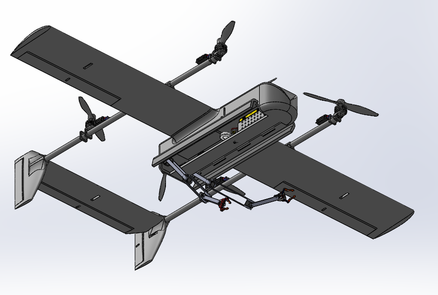

AERIXON-VT — Hybrid VTOL Aerial Manipulator (Ongoing)
An ongoing research project developing a hybrid VTOL platform for aerial manipulation and mapping. Unlike a conventional fixed-base robot, the manipulator moves with the aircraft: its dynamics must account for aircraft velocity and acceleration, arm motion, payload changes, and external disturbances such as wind. The project explores coupled aircraft–manipulator dynamics using an Euler–Lagrange modeling approach, with ROS 2, Gazebo, and PX4 for simulation and control development. A key challenge is balancing center-of-gravity location, stability, and aerodynamic requirements across both multirotor hover and fixed-wing flight. Airfoil pitching moment, tail sizing, propulsion, and structural mass introduce competing design trade-offs. The aim is to develop and evaluate a stable, efficient multi-mode aerial robotic system; modeling, integration, and validation remain in progress.
SolidWorks · ROS2 · Gazebo · Control